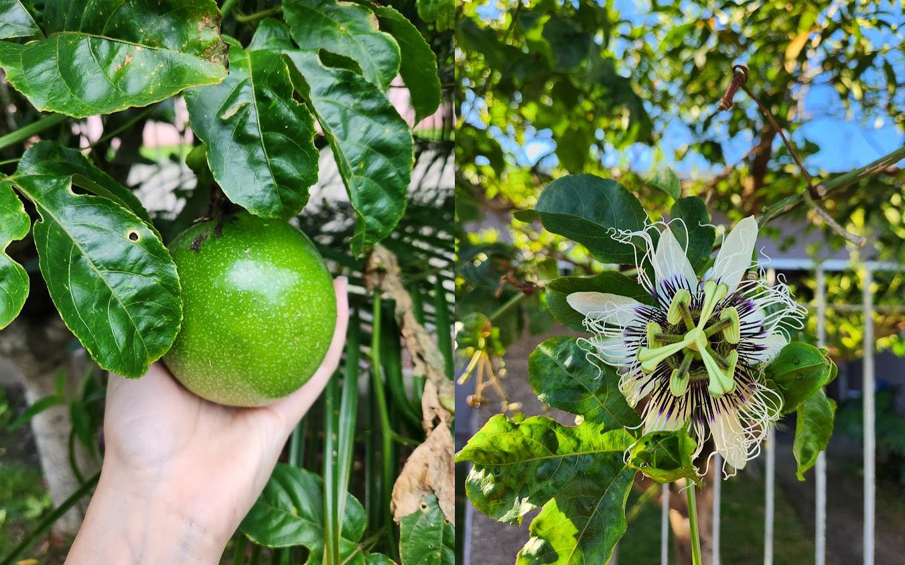

Got to see the legendary Alcione live at her beautiful and lively show. She's a queen!!
2024 rewind ✨ (in no particular order)
Spent time with my dog, who I love so much — even though he couldn’t care less about anyone in the family except my dad (who doesn’t even like him, lol). Okay, there were a few times he showed me some love. I know he loves me in his own way.
Started cycling and discovered that I can reach places I never thought I’d have the energy to bike to.
I beat the best game I’ve ever played. While playing, I had so many moments like, 'OMG, is this really happening?' or 'Okay, that’s now my favorite part of the map.' The Legend of Zelda: Ocarina of Time was one of the first games I remember playing, and the series has a special place in my heart. The Legend of Zelda: Breath of the Wild just made that love even stronger.
Reunited with my brothers. We make such a great squad. I’m sure our parents are proud. Love you, bros! ❤️
Went to another amazing show! I’m not really a concert person, but I really enjoyed this one—especially when I sang QUEM TEM UM AMIGO TEM TUDO (who has a friend has everything) out loud while hugging my friends. Thank you, Emicida!!
Finally got my driver’s license!!! I never thought I’d drive a car one day, not because I didn’t feel capable, but it was never something I wanted. This year, I decided it could be a useful skill, so I took the classes. The process was super tiring, but I’m really glad I achieved this. It’s probably the highlight of 2024. The downside? Now I have even more reasons to HATE the traffic where I live.

And even after getting my driver’s license, I still took the bus a lot, but at least I could just focus on enjoying the view.
Developed a new habit and became a person I never thought I’d be: a gym girl!! There was a time I woke up at 5am just to hit the gym before work—can you believe that? Me neither! I don’t do that anymore, but I still go to the gym at a normal time, lol.
Discovered new places, like the Botanical Garden.

Got my personal passion fruit tree! It’s probably my favorite fruit, and I was lucky enough to watch every flower turn into a fruit throughout the year. Plus, I discovered my new favorite cake: chocolate cake with passion fruit mousse.
I spent a lot of time with myself and realized I really really really enjoy my own company. Am I going to become even more anti-social than I already was?
I went to Rio’s Carnival and watched the Samba School Parades for the second time. No words for that. I love you, Rio! I love you!!! ❤️❤️❤️
Completed the Stardew Valley story. I didn’t even know that was possible! Had so many great times playing this game before bed or on weekends, and created a really beautiful farm.
Created a YouTube channel and uploaded two videos. I really love having those two memories to revisit sometimes. I wish I had more focus to create more, but the editing part was really tough for me. Hoping to make another two videos next year! üòÖ